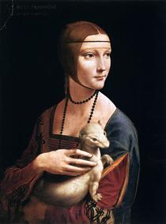

Картини

Пані з горностаєм

Portrait of a Musician

Був амбідекстром - однаковою мірою добре володів правою і лівою рукою . Кажуть навіть, що він міг одночасно писати різні тексти різними руками.
Леонардо не мав прізвища в сучасному розумінні; «да Вінчі» означає просто «(родом) з містечка Вінчі». Повне його ім'я — Леонардо, син пана П'єро з Вінчі (італ. Leonardo di ser Piero da Vinci).
Він був позашлюбною дитиною 25-річного заможного флорентійського нотаріуса П'єро Фруозіно ді Антоніо да Вінчі та селянки Катерини ді Мео Ліппі.
Цей винахід з’явився результатом численних експериментів і спостережень ученого над поведінкою падаючих картонних фігур різноманітної форми. У 1483 році Леонардо да Вінчі намалював ескіз пірамідального парашута.
Леонардо був першим з живописців, хто вдавався до розтину трупів для вивчення будови м'язів, адже вважав науковий підхід основою всього.
Після смерті геніального італійця в його рукописах дійсно знайшли двоколісний апарат, який ну дуже нагадує сучасний велосипед. Механізм залишився той самий: передача руху відбувалась через ланцюг з одного колеса на інше.